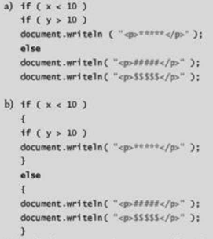

(Problema del else resuelto) Determine la salida de cada uno de los siguientes segmentos de código, cuando x es 9 & y es 11, y cuando x es 11 & y es 9. Observe que el intérprete ingnora la sangría en una secuencia de comandos. Además, el interrete de JavaScript siempre aocia un else con el if anterior, a menos que indique de otra forma mediante la colocación de llaves ( {} ).

a) Cuando x = 9 & y = 11: En este caso ambas condiciones son cumplidas ya que 9 es menor
que 10 y 11 es mayor que 11, por lo que se debería imprir únicamente la línea que está despues del segundo if.
a) Cuando x = 11 & y = 9: En este segundo caso sucede que ninguna de las condiciones en es
cumplida, por lo que salta al else y debería escribir las dos líneas de "document.writeln("...")".
b) Cuando x = 9 & y = 11: En este caso la primer condicioón es cierta por lo cual pasa al if
anidado el cual también se cumple porque 11 es mayor que 10, así que se imprimer la línea dentro del segundo if.
b) Cuando x = 11 & y = 9: No se cumple ninguna condicion, ya que x es mayor a 11 y el acceso
para el segundo if si se cumple la condicion principal, por lo tanto salta al else e imprime las dos líneas.